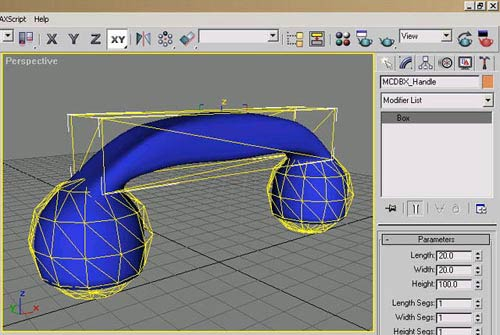
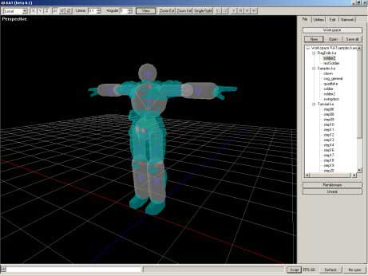
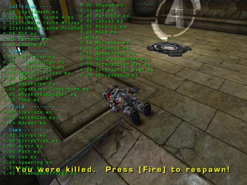

UDN
Search public documentation:
IntroToKarmaJP
English Translation
Interested in the Unreal Engine?
Visit the Unreal Technology site.
Looking for jobs and company info?
Check out the Epic games site.
Questions about support via UDN?
Contact the UDN Staff
Interested in the Unreal Engine?
Visit the Unreal Technology site.
Looking for jobs and company info?
Check out the Epic games site.
Questions about support via UDN?
Contact the UDN Staff
Karma(カルマ)入門
本書の概要: Karma(カルマ)文書の目次。 本書の変更記録: 作成目的のため Jason Lentz (DemiurgeStudios) により最終更新。原作は、Jason Lentz (DemiurgeStudios)。Karma文書ガイド
このページは、 Karma文書の内容や目的について説明しています。探しているものがどの文書にあるのかが定かでない時、本書がその範囲を絞り込むのに役立ちます。下は、このページにある実際の Karma文書へのリンクです。:- KarmaReference (Karmaリファレンス)
- ImportingKarmaActors (Karmaアクタのインポート)
- UsingKarmaActors (Karmaアクタの使用)
- KarmaAuthoringTool (Karma開発ツール - 別名: KAT)
- ExampleMapsKarmaColosseum (実例マップKarmaコロシアム)
- RagdollsInUT2003 (UT2003 のラグドール)
- KarmaExampleUT2003 (Karma例 UT2003)
KarmaReference (Karmaリファレンス)
KarmaReference文書は、Karma融合の削除、 Karmaの有効化、Karma プロパティの説明や KConstraint(K強制)プロパティの説明を含めた、すべてのKarmaActor(Karmaアクタ)機能の総合ガイドです。
Karma アクタのインポート
ImportingKarmaActors (Karmaアクタのインポート) 文書は、ダウンロードできる KarmaActor (Karmaアクタ) (両方とも .ASE と .MAX ファイルフォーマット)を含み、ビルドの中にインポートします。また、この文書は第三者モデリングプログラムを使用して、 KarmaActorの作成方法の説明をしています。(例えば、 3DS Max)
KarmaActorの使用
UsingKarmaActors (KarmaActorの使用) 文書は、ダウンロードできる KarmaActor(両方とも .ASE と .MAX ファイルフォーマット)を含み、ビルドの中にインポートします。
Karma開発ツール
KarmaAuthoringTool (Karma開発ツール) 文書は、キャラクターモデル内のラグドール物理用の KAT の使用について紹介しています。
UT2003 でのラグドール
RagdollsInUT2003 (UT2003のラグドール) 文書は、KAT が以前に UT2003 のキャラクター用 ragdoll physics(ラグドール物理) をどう設定していたかを取り上げています。
Karma実例マップ
次の文書は、レベルにある Karmaの使用法方を実演しているマップの例です。Karma Colosseum
ExampleMapsKarmaColosseum (マップ例Karmaコロシアム) 文書には、単純なKarmaプリミティブからKconstraint(K 強制)や壊れやすいジオメトリを含め、複数の部分から形成されているさらに複雑なオブジェクトまで、多様なKarma Object(Karmaオブジェクト)の作成方法が説明されています。
Karma例 UT2003
KarmaExampleUT2003 (Karma例 UT2003) 文書は、カタパルト、揺れているドアやぐらついている柱で回転している扇風機を、Karmaがどう作成するかを説明しています。マップがUT2003 のみで作動する間、その原理はUnreal の既存のビルドにおいて有効です。